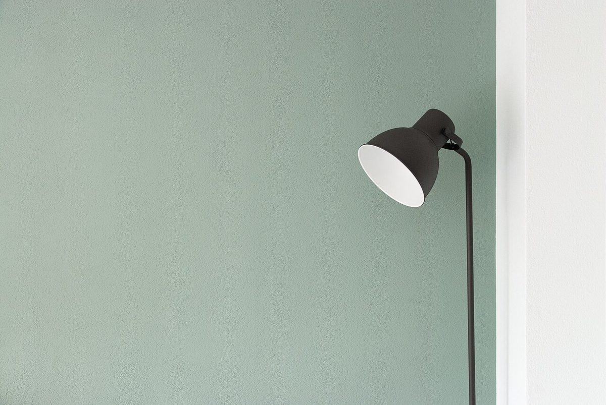

口コミ
このページの内容は、実際のお客様の声ではありません。サイト制作側が作成した、あくまでイメージの例です。
- イメージ例
急ぎの用事もない日に立ち寄って、ゆっくり過ごすことができました。気づけば肩の力が抜けていて、いい時間でした。
- イメージ例
落ち着いた雰囲気で、のんびりできました。静かに考えごとをしたい日に、また来たいと思います。
- イメージ例
帰るころには、少し気持ちが軽くなっていました。近くに来たら、また立ち寄りたいです。

このページの内容は、実際のお客様の声ではありません。サイト制作側が作成した、あくまでイメージの例です。
急ぎの用事もない日に立ち寄って、ゆっくり過ごすことができました。気づけば肩の力が抜けていて、いい時間でした。
落ち着いた雰囲気で、のんびりできました。静かに考えごとをしたい日に、また来たいと思います。
帰るころには、少し気持ちが軽くなっていました。近くに来たら、また立ち寄りたいです。

掲載写真はフリー素材のイメージです。店舗の実際の様子ではありません。他地域で撮影されたもの、撮影地が不明なものを含みます。
電話する 090-4917-1598